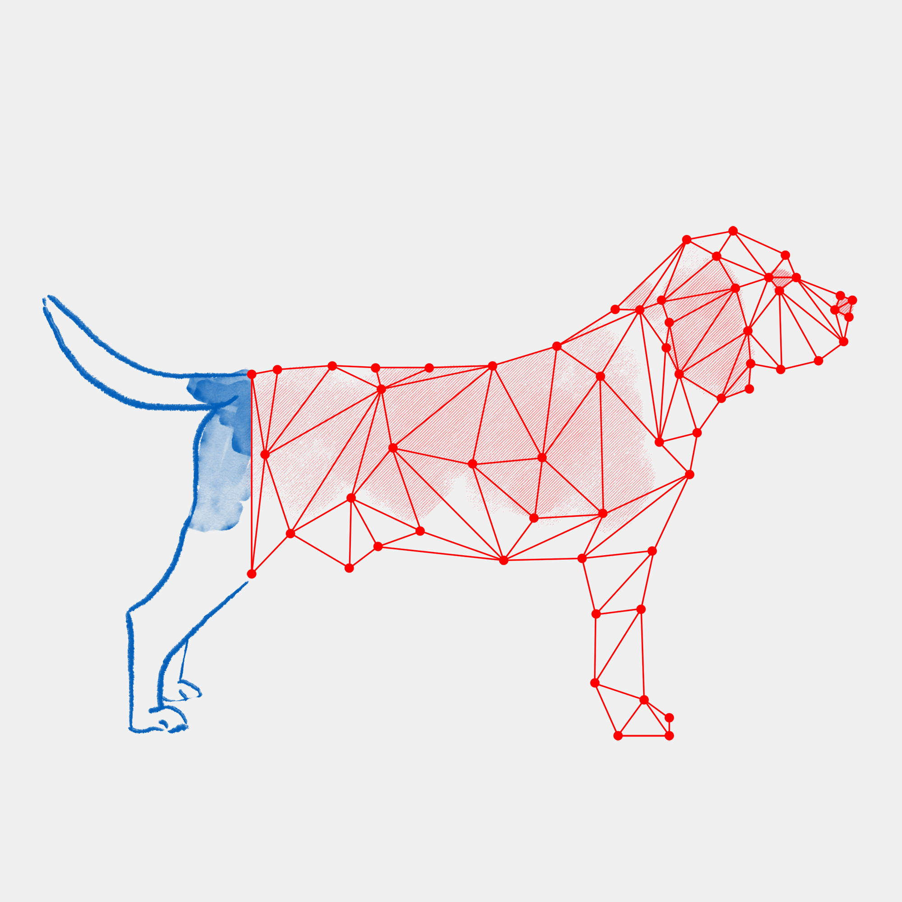

Authors: Kivisaari, S.L., van Vliet, M., Hultén, A., Lindh-Knuutila, T., Faisal, A., Salmelin, R.
DOI: https://doi.org/10.1038/s41467-019-08848-0
Abstract: Modern theories of semantics posit that the meaning of words can be decomposed into a unique combination of semantic features (e.g., “dog” would include “barks”). Here, we demonstrate using functional MRI (fMRI) that the brain combines bits of information into meaningful object representations. Participants receive clues of individual objects in form of three isolated semantic features, given as verbal descriptions. We use machine-learning-based neural decoding to learn a mapping between individual semantic features and BOLD activation patterns. The recorded brain patterns are best decoded using a combination of not only the three semantic features that were in fact presented as clues, but a far richer set of semantic features typically linked to the target object. We conclude that our experimental protocol allowed us to demonstrate that fragmented information is combined into a complete semantic representation of an object and to identify brain regions associated with object meaning.
Link to the article can be found here . The study is currently in print.
